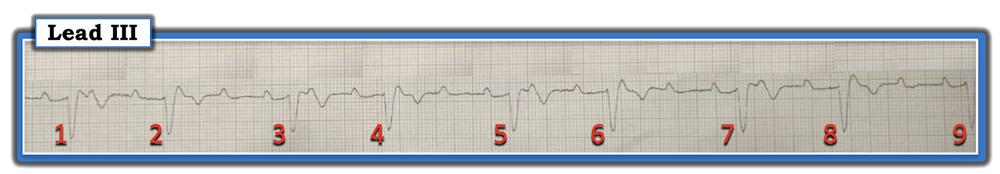
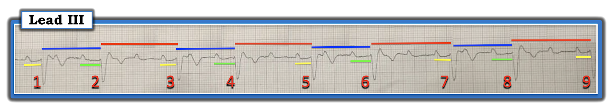
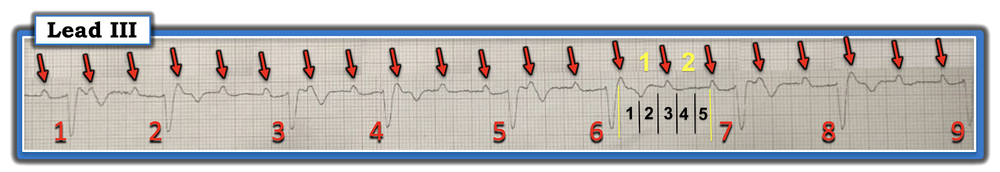
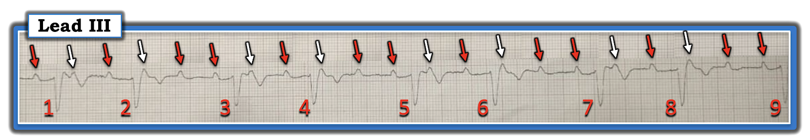
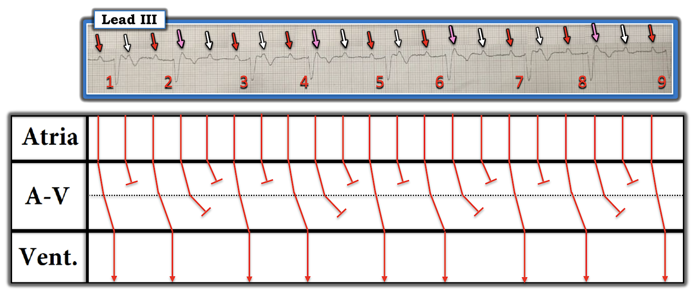
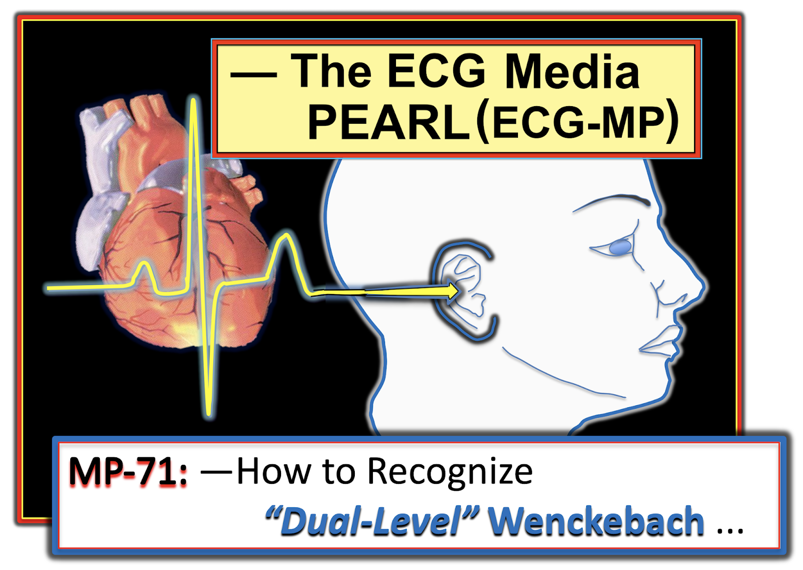
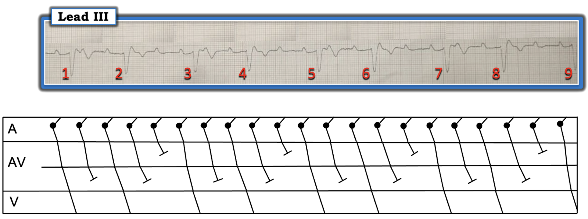

ECG Blog #347 — Vì sao có sóng P không được dẫn truyền?
Dải nhịp chuyển đạo III trong Hình-1 — được ghi ở một phụ nữ lớn tuổi sau một cơn ngất. Điện tâm đồ 12 chuyển đạo của bà cho thấy QRS giãn rộng theo kiểu IVCD (chậm dẫn truyền trong thất — IntraVentricular Conduction Defect) không đặc hiệu — nhưng không gợi ý tắc động mạch vành cấp. Bệnh nhân ổn định huyết động vào thời điểm ghi dải nhịp trong Hình-1.
Các câu hỏi THỬ THÁCH:
Một (hoặc nhiều) lựa chọn nào sau đây là đúng?
- Có nhịp xoang bình thường.
- Có AFib (rung nhĩ — Atrial Fibrillation).
- Có phân ly nhĩ thất (AV dissociation).
- Có blốc AV độ 3.
- Có một kiểu dẫn truyền Wenckebach nào đó.


===========================
- LƯU Ý #1: Như mọi khi — tôi ưu tiên Cách tiếp cận Ps, Qs & 3R để đọc nhịp tim (Xem ECG Blog #185). Đánh giá 5 thông số này cho chúng ta câu trả lời cho các câu hỏi Thử thách ở trên — và thu hẹp đáng kể các khả năng chẩn đoán nhịp.
- LƯU Ý #2: Bản ghi hôm nay hơi bị nghiêng (xiên) — và vì thế, các số đo hơi bị “lệch”. Dù vậy — điều này không ảnh hưởng đến cách đọc tổng thể của tôi về nhịp hôm nay.
===========================
Có AFib không? — HAY — Có phải nhịp xoang?
Sóng P chắc chắn có mặt trong Hình-1 — điều này loại trừ khả năng AFib. Rõ ràng là có nhiều hơn một sóng P nằm trong một số khoảng R-R — nên đây không phải là một “nhịp xoang” đơn thuần.
Có phân ly nhĩ thất không?
Phân ly nhĩ thất (AV dissociation) được định nghĩa là không có bất kỳ mối liên hệ nào giữa sóng P và phức bộ QRS. Đây có thể là phân ly nhĩ thất “hoàn toàn” (trong trường hợp này không sóng P nào trên toàn bộ dải nhịp liên quan với bất kỳ phức bộ QRS nào — như gặp trong blốc AV hoàn toàn) — hoặc phân ly nhĩ thất có thể thoáng qua (tức là, "từng lúc" — hoặc chỉ xảy ra trong một hay vài nhát, nhưng không suốt toàn bộ bản ghi).
- Mặc dù thoạt nhìn có vẻ như nhịp hôm nay có phân ly nhĩ thất — nhưng NHÌN vào Hình-2 sẽ thấy không phải vậy. TẠI SAO tôi nói thế?
- GỢI Ý: Các đường màu trong Hình-2 gợi ý điều gì?


Tại sao Không có phân ly nhĩ thất:
Mặc dù nhịp trong Hình-2 không đều — nhịp này có một quy luật (tức là, nhịp có tính "không đều một cách đều đặn"). Như vậy, có nhịp theo "nhóm" (group beating — tức là, các khoảng R-R ngắn hơn rồi dài hơn luân phiên nhau).
- Lưu ý rằng mỗi khoảng R-R ngắn hơn trong Hình-2 (các đường XANH DƯƠNG) — đều có độ dài xấp xỉ bằng nhau.
- Mỗi khoảng R-R dài hơn (các đường ĐỎ) — cũng có độ dài tương tự (nếu không muốn nói là bằng nhau). Điều này không phải ngẫu nhiên!
ĐIỂM THEN CHỐT (PEARL) #1: Như đã nhấn mạnh trong ECG Blog #186 — Bất cứ khi nào bạn thấy nhịp theo nhóm trong một nhịp — Hãy nghĩ tới khả năng có một kiểu nào đó của dẫn truyền Wenckebach!
- Kiểu dẫn truyền Wenckebach mà phần lớn nhân viên y tế quen thuộc — là blốc AV độ 2 Mobitz loại I — trong đó khoảng PR dài dần cho đến khi một nhát bị rớt. Một tên gọi khác của Mobitz I = Wenckebach AV!
- Điều quan trọng là cần hiểu rằng còn nhiều ví dụ khác về dẫn truyền Wenckebach! Bao gồm Wenckebach SA — AFib, AFlutter hoặc ATach có dẫn truyền Wenckebach (trong đó có nhịp theo nhóm với tính chu kỳ Wenckebach) — nhịp bộ nối hoặc nhịp thất có Wenckebach ngược dòng hoặc có blốc đường ra kiểu Wenckebach — và nhiều trường hợp khác.
- ĐIỂM THEN CHỐT (PEARL) #2: Mặc dù cơ chế cụ thể của nhiều kiểu dẫn truyền Wenckebach này là phức tạp (và vượt ra ngoài phạm vi của ECG Blog hôm nay) — Điều "cần nhớ" từ bài hôm nay là Hãy nghĩ tới một kiểu dẫn truyền Wenckebach nào đó bất cứ khi nào bạn thấy nhịp theo "nhóm".
- Dẫn truyền Wenckebach sẽ không phải lúc nào cũng có trong những trường hợp như vậy (tức là, bạn có thể thấy nhịp theo nhóm ở các nhịp khác — như nhịp đôi hoặc nhịp ba nhĩ) — nhưng nhận ra ngay nhịp theo nhóm khi nó thực sự xảy ra sẽ giúp nhanh chóng xác định các nhịp Wenckebach!
Tiếp tục với Hình-2:
BẠN có để ý kiểu lặp lại của các khoảng PR trong Hình-2 không?
- Lưu ý rằng mỗi khoảng PR ngắn hơn trong Hình-2 (các đường VÀNG) — đều có độ dài xấp xỉ bằng nhau.
- Mỗi khoảng PR dài hơn (các đường XANH LÁ) — cũng có độ dài tương tự. Điều này cũng không phải ngẫu nhiên!
ĐIỀU CỐT LÕI về Hình-2:
Không có phân ly nhĩ thất trong Hình-2 — vì mọi sóng P đều liên quan theo một cách nào đó với các phức bộ QRS kế cận. Chúng ta biết điều này — vì độ dài của 2 khoảng PR khác nhau mà ta thấy trong nhịp này (được đánh dấu bằng các đường VÀNG và XANH LÁ) liên tục lặp đi lặp lại! Điều này có nghĩa là phải có một kiểu dẫn truyền nào đó!
- Vì có một kiểu dẫn truyền nào đó trong Hình-2 — điều này loại trừ khả năng blốc AV độ 3 (hoàn toàn)! Bạn không thể có blốc AV hoàn toàn NẾU vẫn có một phần dẫn truyền.
- Thay vào đó — việc chúng ta thấy nhịp theo nhóm trong Hình-2 (dưới dạng các khoảng R-R ngắn hơn rồi dài hơn luân phiên) — có nghĩa là nhiều khả năng đang có một dạng dẫn truyền Wenckebach nào đó!
Nhịp nhĩ có đều không?
Hãy NHÌN lại nhịp hôm nay (tức là, Xem Hình-3).
- Nhịp nhĩ có đều không?
ĐIỂM THEN CHỐT (PEARL) #3: Dẫn truyền Wenckebach rất thường gặp với cả ATach (nhịp nhanh nhĩ — Atrial Tachycardia) và AFlutter (cuồng nhĩ — Atrial Flutter). Vì vậy — NẾU bạn thấy một nhịp nhĩ nhanh và đều đi kèm nhịp theo nhóm — cơ chế nền thường sẽ liên quan đến một kiểu dẫn truyền Wenckebach nào đó.
- Như tôi vẫn thường nhấn mạnh — Dùng compa đo (calipers) giúp bạn đọc nhanh hơn và giúp DỄ DÀNG xác định nhịp nhĩ nền có đều (hay không đều).
- Tìm một chỗ trên dải nhịp bạn đang xem mà ở đó bạn chắc chắn thấy 2 sóng P liên tiếp (tức là, Bất kỳ khoảng R-R dài hơn nào trong Hình-3 cũng được!). Chỉnh compa đo thật chính xác bằng khoảng cách giữa 2 sóng P liên tiếp này — và khi đó sẽ DỄ DÀNG "dò bước" sóng P qua toàn bộ dải nhịp (tức là, các mũi tên ĐỎ trong Hình-4).
ĐIỂM THEN CHỐT (PEARL) #4: Một khi đã xác định nhịp nhĩ là đều — việc xác định tần số nhĩ cung cấp một manh mối quan trọng về loại nhịp nhĩ.
- Như đã giải thích trong ECG Blog #210 — phương pháp Cách-Một-Nhát để xác định tần số thất — cũng áp dụng tốt như vậy để xác định tần số của các nhịp nhĩ nhanh.


Những gì chúng ta Đã Biết đến lúc này!
Mặc dù chúng ta chưa xác định được cơ chế cụ thể của nhịp hôm nay — Chúng ta đã trả lời cả 5 Câu hỏi Thử thách:
- Không có AFib cũng không có nhịp xoang đơn thuần. Sự hiện diện của sóng P đều loại trừ AFib. Tần số nhĩ nhanh (tức là, khoảng ~125/phút) kèm việc không dẫn truyền hết mọi sóng P loại trừ nhịp xoang đơn thuần. Thay vào đó — đây là nhịp nhanh nhĩ.
- Nhịp theo nhóm với 2 khoảng PR lặp lại đều đặn (như được đánh dấu bằng các đường VÀNG và XANH LÁ trong Hình-2) — loại trừ blốc AV độ 3 và phân ly nhĩ thất. Thay vào đó — các dấu hiệu này gợi ý mạnh rằng đang có một kiểu dẫn truyền Wenckebach nào đó.
- ĐIỂM THEN CHỐT (PEARL) #5: Xin nhấn mạnh — sự hiện diện của dẫn truyền Wenckebach đi kèm ATach hoặc AFlutter không nhất thiết cho thấy một dạng blốc AV bệnh lý! Thay vào đó — điều này có thể đơn giản là hậu quả của tần số nhĩ nhanh (trong trường hợp đó, dẫn truyền AV 1:1 bình thường có thể trở lại khi nhịp nhĩ nhanh hết). Đôi khi chỉ có đối chiếu lâm sàng và một chút thời gian trôi qua mới cho biết dẫn truyền Wenckebach đi kèm ATach hoặc AFlutter có (hay không) bệnh lý.
- Dù vậy — bệnh nhân trong Ca hôm nay là một phụ nữ lớn tuổi đến khám với nhịp trong Hình-1 sau một cơn ngất. Ngoài ra — trên bản ghi 12 chuyển đạo của bà có QRS giãn rộng do IVCD không đặc hiệu. Vì vậy — mọi dạng rối loạn dẫn truyền AV đều phải được coi là bệnh lý cho đến khi chứng minh được điều ngược lại!
- Thông điệp "cần nhớ" CHÍNH từ Ca hôm nay: Cơ chế cụ thể của nhịp hôm nay là phức tạp. Bác sĩ tuyến đầu không nhất thiết phải hiểu đầy đủ mới xử trí thích hợp được. Thay vào đó — có thể dừng việc đọc sau khi xác định rằng nhịp hôm nay là nhịp nhanh nhĩ với một dạng dẫn truyền Wenckebach nào đó ở bệnh nhân lớn tuổi bị ngất này — người rõ ràng cần được đánh giá thêm (và cuối cùng có thể cần máy tạo nhịp).
===================================
Vượt ra ngoài phần cốt lõi: Nhịp cụ thể
Nhìn kỹ hơn vào Hình-4, trong đó chúng tôi đánh dấu các sóng P xuất hiện đều đặn trên toàn bộ bản ghi của nhịp hôm nay — Chẳng phải có những sóng P mà chúng ta biết là không được dẫn truyền xuống thất sao?
- Câu trả lời tôi đề xuất cho câu hỏi này nằm ở Hình-5 — trong đó tôi đánh dấu các sóng P dường như không thể được dẫn truyền suốt tới thất (các mũi tên TRẮNG trong Hình-5).
- Như vậy còn lại các khoảng R-R xen kẽ trong đó ta thấy 2 sóng P mũi tên ĐỎ liên tiếp. Khó mà hình dung được rằng cả hai sóng P mũi tên ĐỎ liên tiếp này (xuất hiện giữa các nhát #2-3; 4-5; 6-7 và 8-9) — đều có thể được dẫn truyền xuống thất. Vậy thì LÀM SAO chúng ta giải thích điều này?


Blốc AV Hai Tầng:
Trong ECG Blog #259 — tôi đã bàn về khái niệm Blốc AV Hai Tầng (Xem PHẦN BỔ SUNG bên dưới để có một Audio Pearl ôn lại khái niệm này). Nói ngắn gọn — dẫn truyền Wenckebach có thể xảy ra ở nhiều hơn một tầng khi các xung động nhĩ đi ra khỏi nút AV. Khái niệm này dễ minh họa nhất bằng một giản đồ bậc thang (laddergram — Xem Hình-6).
- Nhịp nhĩ trong giản đồ bậc thang được biểu diễn bằng các vạch dọc ĐỎ đều đặn ở Tầng Nhĩ.
- Đường chấm chấm nằm ngang màu ĐEN chia Tầng Nút AV một cách sơ đồ thành 2 tầng, mỗi tầng dẫn truyền xung động với mức độ blốc AV riêng của nó.
- Các sóng P mũi tên TRẮNG không đi qua được tầng trên của nút AV. Lưu ý rằng ở tầng trên này có dẫn truyền Wenckebach 2:1 và 3:2 luân phiên.
- Các sóng P mũi tên HỒNG đi qua được tầng trên của nút AV — nhưng không đi qua được tầng dưới của nút AV.
- Các sóng P mũi tên ĐỎ đi qua được cả hai tầng của nút AV — và được dẫn truyền xuống thất. Lưu ý rằng có dẫn truyền Wenckebach AV 3:2 qua tầng dưới này của nút AV.


KẾT LUẬN CA BỆNH:
Giản đồ bậc thang trong Hình-6 là hợp lý — vì mọi sóng P và mọi phức bộ QRS trên bản ghi này đều được giải thích. Nhịp nền là nhịp nhanh nhĩ với dẫn truyền Wenckebach hai tầng ra khỏi nút AV, biểu hiện bằng dẫn truyền 2:1 và 3:2 luân phiên ở tầng trên của nút AV — và dẫn truyền AV 3:2 ở tầng dưới.
- Về lâm sàng (như đã nhấn mạnh trong Thông điệp cần nhớ ở trên) — với biểu hiện ngất của bệnh nhân này, việc đánh giá đầy đủ cho người phụ nữ lớn tuổi này là cần thiết. Trong khi chờ kết quả — cuối cùng bà có thể cần tạo nhịp vĩnh viễn (Rất tiếc — tôi không có thông tin theo dõi cụ thể về ca này).
- T.B. (P.S.): Với những ai muốn được hướng dẫn cách dựng giản đồ bậc thang khi có blốc AV hai tầng — Xin xem minh họa giản đồ bậc thang Từng-Bước-một cho một ca tương tự trong ECG Blog #259.
==================================
LỜI CẢM ƠN: Xin cảm ơn Nizar Jiris (từ Kfar Yasif, Israel) đã cho phép tôi sử dụng ca bệnh này và các bản ghi này.
==================================
Các bài ECG Blog liên quan đến Ca hôm nay:
- ECG Blog #185 — Ôn lại Cách tiếp cận Ps, Qs & 3R để đọc nhịp một cách hệ thống.
- ECG Blog #210 — Ôn lại phương pháp Cách-Một-Nhát để xác định tần số của một nhịp nhanh đều.
- ECG Blog #188 — Ôn lại những điều cốt yếu để đọc (và/hoặc vẽ) Giản đồ bậc thang, kèm ĐƯỜNG LINK tới nhiều giản đồ bậc thang tôi đã vẽ và bàn chi tiết trong các bài blog khác.
- ECG Blog #186 — Nhấn mạnh tầm quan trọng của nhịp theo nhóm — và ôn lại khi nào nên nghi ngờ dạng Mobitz I của blốc AV độ 2 ( = Wenckebach AV).
- ECG Blog #251 — Ôn lại các khái niệm tính chu kỳ Wenckebach và "Dấu chân" của Wenckebach (Xin nghe Audio Pearl trong bài blog này, tập trung vào các khái niệm đó).
- ECG Blog #164 — Ôn lại một ca điển hình blốc AV độ 2 Mobitz I (kèm bàn luận chi tiết về "Dấu chân" của Wenckebach).
- ECG Blog #259 — Ôn lại khái niệm Blốc AV Hai Tầng.
- Bài ngày 25 tháng 10 năm 2021 trên Dr. Smith's ECG Blog — Bình luận của tôi (ở cuối trang) trình bày cách tiếp cận của tôi với một ca khác có blốc Wenckebach Hai Tầng.
- ECG Blog #226 — Phân tích chi tiết một Ca bệnh phức tạp (bao gồm một ECG Video Pearl dài 11:00 phút hướng dẫn bạn từng bước dựng một giản đồ bậc thang có dẫn truyền Wenckebach và blốc hai tầng trong nút AV).
- ECG Blog #243 — Ôn lại một ca AFlutter có Wenckebach Hai Tầng ra khỏi nút AV.
==================================
PHẦN BỔ SUNG (28/11/2022):
- Để ôn lại khái niệm Wenckebach "Hai Tầng".


ECG Media PEARL #71 (5:45 phút Audio) — Ôn lại hiện tượng Wenckebach Hai Tầng ra khỏi nút AV (LÀM SAO nhận ra hiện tượng này — và làm sao phân biệt nó với Mobitz II).

==================================
PHẦN BỔ SUNG (29/11/2021): Hôm nay tôi nhận được một bình luận về bản ghi này từ David Richley, người rất quen thuộc với hầu hết những người đam mê điện tâm đồ thường lui tới các diễn đàn điện tâm đồ trên internet. Dave luôn đưa ra những bình luận sắc sảo nhất về việc đọc các rối loạn nhịp phức tạp. LƯU Ý: Phần dưới đây vượt ra ngoài phần cốt lõi! — Nhưng — Nó minh họa một khái niệm quan trọng: các rối loạn nhịp phức tạp có thể có nhiều hơn một cách đọc hợp lý.
- Dave viết như sau: Chào Ken. Tôi rất thích bài ECG blog mới nhất của anh (như mọi khi) — nhưng dù tôi đồng ý rằng có blốc AV Wenckebach hai tầng — tôi không thể giải thích tại sao blốc 2:1 lại luân phiên với blốc 3:2 ở tầng trên của nút AV. Giải thích sinh lý cho điều này có thể là gì?
- Tôi đã đưa ra một chỉnh sửa cho giả thuyết của anh: Tôi nghĩ có thể có blốc AV Wenckebach 5:4 ở tầng trên của nút AV — rồi blốc 2:1 đối với những xung động xuống tới tầng dưới của nút AV, như minh họa trong giản đồ bậc thang này. Anh nghĩ sao? — Dave —


Trả lời của TÔI gửi Dave:
- Dave — Tôi nghĩ cả giản đồ bậc thang của anh và của tôi đều hợp lý. Với blốc AV hai tầng, tôi luôn thấy khó khăn — khi cố xác định xem tầng trên hay tầng dưới của nút AV mới là tầng có mức độ blốc cao hơn. (Xem lại một số bài báo gốc về blốc AV hai tầng — họ còn mô tả hơn 2 tầng blốc trong nút AV — nên mọi chuyện có thể còn phức tạp hơn cả những gì ta thấy ở nhịp hôm nay).
- Theo Hình-6 của tôi — những nhát có khoảng PR ngắn hơn (tức là, các nhát #1,3,5,7,9) — đi sau các khoảng R-R dài hơn — nên tôi nghĩ điều đó có thể cho thêm thời gian để hồi phục, từ đó cho phép dẫn truyền tốt hơn (nhanh hơn) qua tầng dưới của nút AV. Tôi hoàn toàn thừa nhận là có thể mình sai ...
- ĐIỀU CỐT LÕI: Điểm MẤU CHỐT nằm ở câu đầu tiên của anh, trong đó anh nói rằng cả hai chúng ta đều đồng ý là có blốc AV hai tầng. Các mối quan hệ hình học (với các khoảng PR và R-R lặp lại) không phải ngẫu nhiên — không phản ánh blốc AV hoàn toàn — mà là biểu hiện của một biến thể nào đó của dẫn truyền Wenckebach AV. Về điểm này cả hai chúng ta đều đồng ý! MỘT LẦN NỮA CẢM ƠN anh vì những nhận định luôn tuyệt vời, Dave!